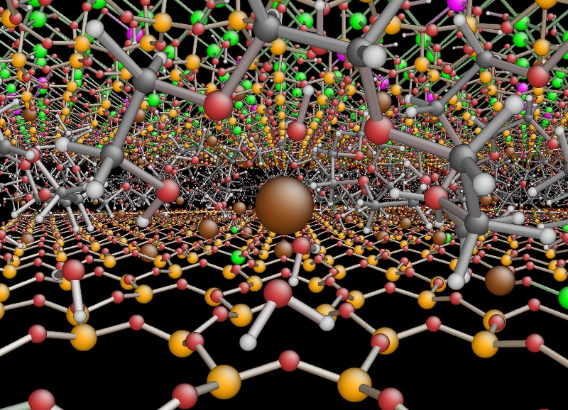

Studying Computational Chemistry you will learn to develop and apply a variety of tools that allow you to describe chemical processes at different resolution scales: from solving very accurate quantum mechanical and electronic structure problems, through modeling chemical reactions in the gas phase as well as in solutions, to modeling soft-matter and biological systems like proteins, DNA etc.
One hundred years after the quantum mechanical revolution, chemistry has reached the level of a mature discipline, where the fundamental equations describing the interactions at the level of chemical bonding and intermolecular forces are in principle known. The grand challenge that we face today is in predicting and controlling with high accuracy the behaviour of chemical systems in the presence of complex interactions (heterogeneous phases, system not in thermodynamic equilibrium, interactions with strong electromagnetic fields, etc).
This is where computational modeling enters the game. Both software developments and the constant growth of massive parallel architectures allow us to overcome the heavy computational costs in simulations of atomic and molecular systems. Graphical user interfaces are also important tools used today in modeling chemistry
In addition to the general skills acquired in the Master in Computational Science, here we note that computer modeling is today a standard tool used in several chemistry labs both in research and industry — for example, drug development research and development units use computer modeling to optimize leads prior to their synthesis, which will make the profile of the graduate students very appealing in the job market.
This is new program at the University of Oslo and through various activities, spanning from common meetings and field trips to various social gatherings, we will gradually build up a top learning environment where you will thrive as a student and learn to develop your scientific creativity. The University of Oslo offers a rich and active student environment with more than 200 student led activities and organizations.
All study options offer possibilities for stays abroad. Planning a semester or more abroad or performing parts of your thesis at a collaborating institution is something we highly recommend. As a student in this program you have a number of interesting international exchange possibilities. The involved researchers have extensive collaborations with other researchers worldwide. These exchange possibilities range from top universities in the USA, Asia and Europe as well as leading National Laboratories in the USA. Don't hesitate to get in touch with the contact person of your study option in case you plan to spend time abroad. Studies at other institutions can be planned from the very first semester of this Master of Science program.
Students at the University of Oslo may choose to take parts of their degrees at a university abroad. The University of Oslo has exchange agreements with other universities in different parts of the world. The MN Faculty has additional exchange agreements with many universities abroad.
A significant aspect of this program is the ability to offer new educational opportunities that are aligned with the needs of a 21st century workforce. Many companies are seeking individuals who have knowledge of both a specific discipline and computational modeling. And candidates who are capable of modeling and understanding complicated systems in natural science, are in short supply in society. The computational methods and approaches to scientific problems that you will learn when working on your thesis project are very similar to the methods you will use in later stages of your career. To handle large numerical projects demands structured thinking and good analytical skills and a thorough understanding of the problems to be solved. This knowledge makes you unique on the labor market.
Career opportunities are many, from research institutes, universities and university colleges and a multitude of companies. The program gives an excellent background for further studies, with a PhD as one possible goal.
The program has also a strong international element which allows students to gain important experience from international collaborations in science, with the opportunity to spend parts of the time spent on thesis work at research institutions abroad.